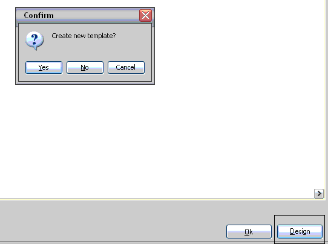
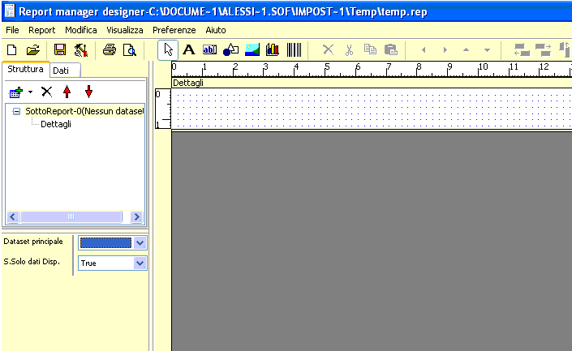
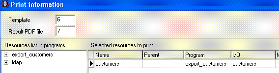

Dopo aver realizzato i programmi per l’esportazione dati verso file XML è possibile utilizzare o2reporter come generatore di report.
o2reporter è un generatore di report molto semplice che utilizza le risorse XML come dataset, aiuta il programmatore nella definizione di template di stampa e, se invocato dall’istruzione Print, produce direttamente un file PDF come risultato del report.
Riprendiamo il programma visto nel precedente capitolo, e torniamo alla action “esporta”; dopo l’istruzione Execute action inseriamo una nuova riga selezionando l’operatore Print.
Dopo aver selezionato l’operatore Print apparirà una finestra Print information, richiedendo di definire:
- Un’espressione per definire il nome del template che sarà utilizzato (file di tipo frf). I template si trovano nella directory dei modelli ([app_root]/models/).
- Un’espressione per definire il nome del file PDF che sarà prodotto nella directory temporanea dell’utente collegato
- Un elenco di risorse (file XML) implicate nel report con eventuali parametri per il collegamento fra risorse (Parent, Master fields, Index fields).
Nel nostro esercizio selezioniamo solamente la risorsa “customers” dal treeview di sinistra e premendo il pulsante Include otteniamo:
Dalla colonna Test file premere il pulsante di scelta e selezionare il file XML generato con l’export. Definire il file di test è necessario per accedere alla definizione grafica del template tramite o2reporter.
Premere il pulsante Design in basso a destra accedendo così a o2reporter.
Dopo aver realizzato il template salvare il file (nometemplate.frf) nella directory dei modelli, esattamente in [app_root]/models/.
Adesso, rieseguendo il progrmma nella directory tmp dell’utente, comparirà il file PDF.
